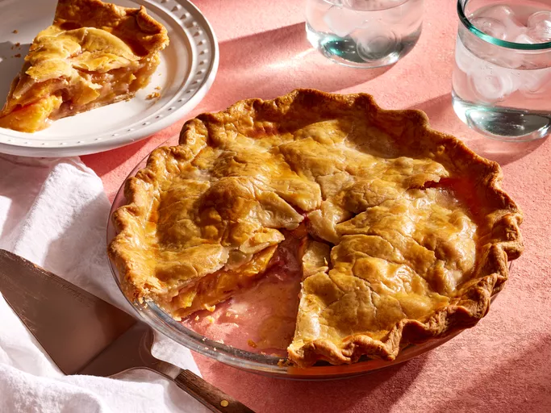

Peach Pie the Old Fashioned Two Crust Way

Description
This old-fashioned peach pie recipe is a top-rated staple you’ll come back to every summer.
Ingredients
- 1 (14.1 ounce) package pastry for a double-crust 9-inch pie
- 1 egg, beaten
- 5 cups sliced peeled peaches
- 2 tablespoons lemon juice
- 1 cup white sugar
- ½ cup all-purpose flour
- ½ teaspoon ground cinnamon
- ¼ teaspoon ground nutmeg
- ¼ teaspoon salt
- 2 tablespoons butter
Steps
- Gather all ingredients and preheat the oven to 450 degrees F (220 degrees C).
-
Line the bottom and sides of a 9-inch pie plate with one pie crust. Lightly brush crust with
egg to prevent dough from becoming soggy later. Set second crust aside.
-
Place peaches in a large bowl, sprinkle with lemon juice, and mix gently. Mix together
sugar, flour, cinnamon, nutmeg, and salt in a separate bowl. Pour over peaches and mix until
combined.
- Pour into pie crust and dot with butter.
-
Cover filling with remaining pie crust. Flute the edges to seal or use a fork dipped in egg
to press them down. Brush remaining egg on top, then cut several slits in the top crust to
allow steam to escape.
-
Bake pie in the preheated oven for 10 minutes. Reduce the heat to 350 degrees F (175 degrees
C) and bake until crust is brown and juice begins to bubble through the vents, 30 to 35 more
minutes. If the edges brown too fast, cover them with strips of aluminum foil about halfway
through baking.
- Cool pie for 15 minutes before slicing. Enjoy!